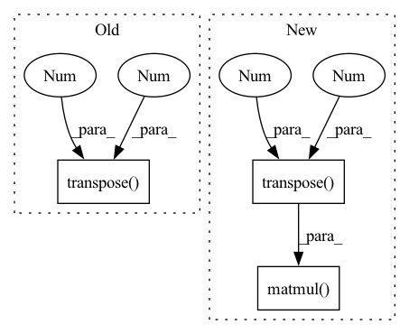

Pattern ID :28246

Before Change
src_embedding = src_embedding + src_embedding_p
tgt_embedding = tgt_embedding + tgt_embedding_p
scores = torch.matmul(src_embedding.transpose(2, 1).contiguous(), tgt_embedding) / math.sqrt(self.emb_dims)
scores = torch.softmax(scores, dim=2)
// b x points x points
feat1_corr = torch.matmul(feat2, scores.transpose(2, 1).contiguous())
After Change
rotation_ba, translation_ba = self.head(tgt_embedding, src_embedding, tgt, src)
else:
rotation_ba = rotation_ab.transpose(2, 1).contiguous()
translation_ba = -torch.matmul(rotation_ba, translation_ab.unsqueeze(2)).squeeze(2)
T_12 = rt_to_transformation(rotation_ab, translation_ab.unsqueeze(2))
In pattern: SUPERPATTERN
Frequency: 3
Non-data size: 3
Instances
Fragment ID: 83410840
Project Name: paul007pl/mvp_benchmark
Commit Name: cb5622fec6ad947b57a83033563a402533978c61
Time: 2021-07-12
Author: panliang_de2007@qq.com
File Name: registration/models/dcp.py
M Class Name: Model
N Class Name: Model
M Method Name: forward(5)
N Method Name: forward(5)
M Parent Class: nn.Module
N Parent Class: nn.Module
M File Name: registration/models/dcp.py
N File Name: registration/models/dcp.py
M Start Line: 270
M End Line: 294
N Start Line: 394
N End Line: 425
'>
Before Change
value_states = value_states.view(*proj_shape)
src_len = key_states.size(1)
attn_weights = torch.bmm(query_states, key_states.transpose(1, 2))
// q_t is [batch, seq_length, n_heads, dim_per_head]
import ipdb; ipdb.set_trace()
After Change
src_len = key_states.size(2)
// compute scores
attn_weights = torch.matmul(
query_states, key_states.transpose(3, 2)
) // equivalent of torch.einsum("bnqd,bnkd->bnqk", query_states, key_states), compatible with onnx op>9
// q_t is [batch, seq_length, n_heads, dim_per_head]
q_t = query_states.permute(0, 2, 1, 3)
'>
Fragment ID: 83410844
Project Name: joaolages/ratransformers
Commit Name: 87d3c27f618c060b396039f71734d515d3343a4b
Time: 2022-02-11
Author: joaop.glages@gmail.com
File Name: src/ratransformers/bart.py
M Class Name: BartRelationalAttention
N Class Name: BartRelationalAttention
M Method Name: forward(7)
N Method Name: forward(7)
M Parent Class: BartAttention
N Parent Class: BartAttention
M File Name: src/ratransformers/bart.py
N File Name: src/ratransformers/bart.py
M Start Line: 43
M End Line: 138
N Start Line: 43
N End Line: 139
'>
Before Change
depth = torch.zeros(batch_size, 6, 1, *self.image_size).to(points[0].device)
for b in range(batch_size):
cur_coords = points[b][:, :3].transpose(1, 0)
cur_img_aug_matrix = img_aug_matrix[b]
cur_lidar_aug_matrix = lidar_aug_matrix[b]
cur_lidar2image = lidar2image[b]
After Change
// inverse aug
cur_coords -= cur_lidar_aug_matrix[:3, 3]
cur_coords = torch.inverse(cur_lidar_aug_matrix[:3, :3]).matmul(
cur_coords.transpose(1, 0)
)
// lidar2image
cur_coords = cur_lidar2image[:, :3, :3].matmul(cur_coords)
cur_coords += cur_lidar2image[:, :3, 3].reshape(-1, 3, 1)
// get 2d coords
'>
Fragment ID: 83410838
Project Name: mit-han-lab/bevfusion
Commit Name: f39a4a0752fabc1eb81011b0433af69a6e9ff58c
Time: 2022-09-26
Author: kentang@mit.edu
File Name: mmdet3d/models/vtransforms/base.py
M Class Name: BaseDepthTransform
N Class Name: BaseDepthTransform
M Method Name: forward(12)
N Method Name: forward(11)
M Parent Class: BaseTransform
N Parent Class: BaseTransform
M File Name: mmdet3d/models/vtransforms/base.py
N File Name: mmdet3d/models/vtransforms/base.py
M Start Line: 232
M End Line: 285
N Start Line: 219
N End Line: 284